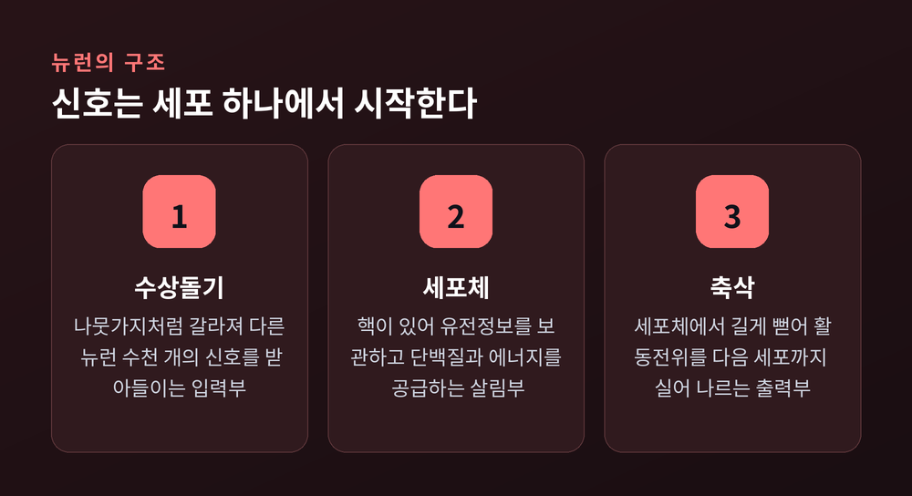
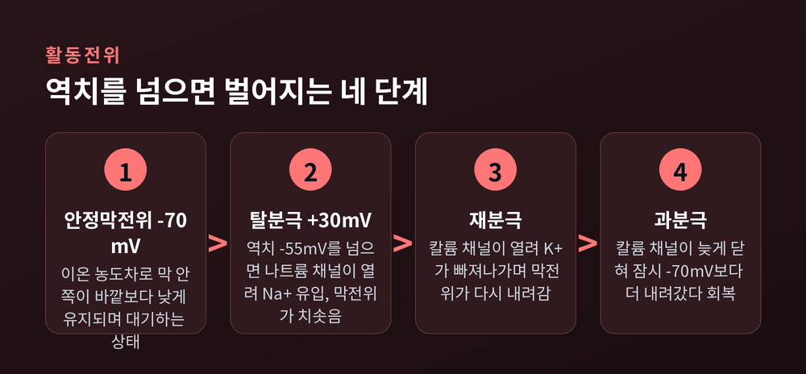
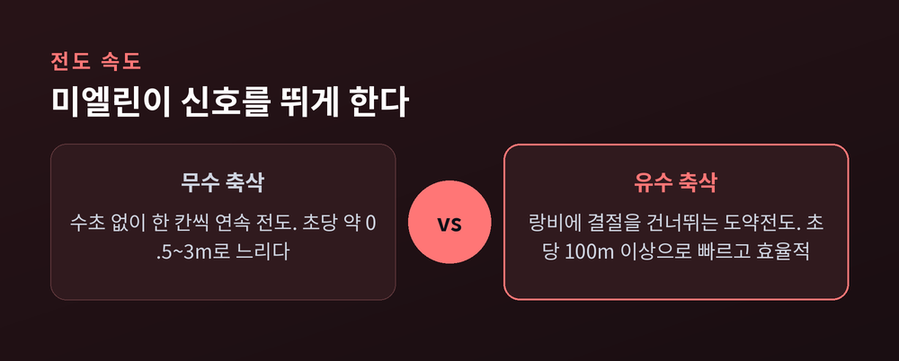
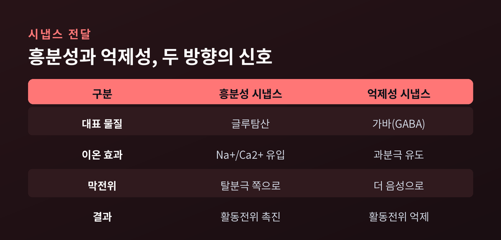

뉴런은 어떻게 신호를 전달하나 — 활동전위와 시냅스의 원리
이번 글에서는 뉴런이 신호를 만들고 옆 세포로 건네는 과정을 정리해 보겠습니다.
멀리 있는 두 사건을 먼저 말씀드립니다. 발가락을 찧은 순간과 "아프다"고 느끼는 순간 사이에는, 세포막을 오가는 이온들의 정교한 릴레이가 있습니다.
그 릴레이의 이름이 활동전위이고, 세포와 세포를 잇는 이음매가 시냅스입니다.

신호는 세포 하나에서 시작한다
먼저 뉴런의 생김새부터 봅니다.
뉴런은 크게 세 부분입니다. 신호를 받는 수상돌기, 살림을 맡는 세포체, 신호를 내보내는 축삭.
수상돌기는 나뭇가지처럼 여러 번 갈라집니다.
이 가지로 다른 뉴런 수천 개의 신호가 흘러듭니다.
세포체 안의 핵은 유전정보를 보관하고 단백질을 만들며 세포에 필요한 에너지를 댑니다.
축삭은 세포체에서 길게 뻗어 나가, 활동전위라는 신호를 다음 세포까지 실어 나릅니다.
사람의 뇌에는 이런 뉴런이 약 860억 개 있다고 추정됩니다.
그 수많은 세포가 서로 손을 맞잡은 자리가 시냅스입니다.
축삭 끝의 말단은 다음 뉴런의 수상돌기와 아주 좁은 틈을 사이에 두고 마주 봅니다.

고요할 때도 세포는 긴장해 있다
아무 자극이 없는 뉴런도 완전히 잠들어 있지는 않습니다.
쉬고 있는 뉴런의 막 안쪽은 바깥쪽보다 약 -70mV 낮습니다.
이것을 안정막전위라고 부릅니다.
이 -70mV는 세포 안팎의 이온 농도차에서 나옵니다.
세포 안에는 칼륨(K⁺)이 많고 나트륨(Na⁺)이 적습니다.
바깥은 정반대로, 나트륨이 많고 칼륨이 적습니다.
이 기울기를 만드는 것이 나트륨-칼륨 펌프입니다.
펌프는 에너지(ATP)를 써서 나트륨 3개를 밖으로 퍼내고 칼륨 2개를 안으로 들입니다.
내보내는 양이온이 들여오는 양이온보다 하나 더 많으니, 세포 안은 조금 더 음성으로 기웁니다.
여기에 더해, 막에는 칼륨이 슬금슬금 새 나가는 통로가 늘 열려 있습니다.
그래서 안정막전위는 칼륨이 정하는 값에 가깝습니다.
말하자면 뉴런은 늘 방아쇠에 손가락을 얹은 채 대기합니다. 당길 준비가 되어 있어야 순식간에 발사할 수 있습니다.
이 대기 상태를 지키는 데에도 값이 듭니다.
나트륨-칼륨 펌프는 잠시도 쉬지 않고 이온을 퍼 나릅니다.
뇌가 가만히 있을 때조차 많은 에너지를 쓰는 이유가 여기에 있습니다.
농도차라는 팽팽한 긴장을 유지하는 것 자체가 노동인 셈입니다.
역치를 넘으면, 전부 아니면 전무
이제 자극이 들어옵니다.
자극이 막을 어느 선까지 밀어 올리면 사건이 시작됩니다.
그 선을 역치라 하고, 대략 -55mV입니다.
역치를 넘는 순간 전압개폐 나트륨 채널이 한꺼번에 열립니다.
밖에 잔뜩 있던 나트륨이 안으로 쏟아져 들어옵니다.
막전위는 -70mV에서 +30mV까지 단숨에 치솟습니다. 이것이 탈분극입니다.
곧이어 전압개폐 칼륨 채널이 열립니다.
칼륨이 밖으로 빠져나가면서 막전위가 다시 내려갑니다. 재분극입니다.
칼륨 채널은 조금 늦게 닫혀서, 막전위가 잠깐 -70mV보다 더 아래로 내려갔다 올라옵니다. 이 짧은 과잉이 과분극입니다.
여기에 중요한 규칙이 하나 있습니다.
활동전위는 "실무율", 곧 전부 아니면 전무입니다.
역치를 넘기만 하면 신호의 크기는 늘 같습니다.
자극이 세다고 더 큰 활동전위가 나오지 않습니다.
강한 자극은 크기가 아니라 빈도로, 즉 더 자주 터뜨리는 방식으로 표현됩니다.
촛불이든 등대든 켜지는 밝기는 같고, 다만 얼마나 자주 깜빡이느냐가 다른 셈입니다.
한 번 터진 뒤 약 1~2밀리초 동안 세포는 다음 신호를 받기 어렵습니다.
나트륨 채널이 잠시 불활성 상태에 빠져 회복될 시간이 필요하기 때문입니다.
이 불응기 덕분에 신호는 뒤로 되돌아가지 않고 한 방향으로만 흐릅니다.

미엘린이 신호를 뛰게 한다
활동전위는 축삭을 따라 옆으로 번져 갑니다.
문제는 속도입니다.
수초, 곧 미엘린이 없는 축삭에서는 신호가 촘촘히 한 칸씩 이어집니다.
전도 속도는 초당 약 0.5~3미터에 그칩니다.
반면 축삭이 미엘린이라는 절연층으로 감싸이면 이야기가 달라집니다.
미엘린은 이온이 새는 것을 막는 절연 테이프 같은 층입니다.
그 사이사이에는 랑비에 결절이라는 벌어진 틈이 있고, 나트륨 채널이 이 틈에 몰려 있습니다.
신호는 미엘린 밑을 미끄러지듯 지나다가 결절에서만 새로 힘을 얻습니다.
결절에서 결절로 건너뛰는 셈입니다. 이것을 도약전도라 합니다.
효과는 큽니다.
미엘린을 두른 축삭은 초당 100미터를 넘겨 달릴 수 있습니다.
게다가 결절에서만 힘을 쓰니 에너지도 아낍니다.
예전엔 신호가 한 칸씩 기어갔다면, 지금은 마디를 건너뛰며 내달리는 셈입니다.
미엘린이 벗겨지면 이 도약이 무너집니다.
신호가 느려지거나 끊기는 병이 바로 그런 경우입니다.

세포와 세포 사이, 화학으로 건네다
신호가 축삭 끝에 닿으면 마지막 관문이 남습니다.
뉴런과 뉴런은 붙어 있지 않습니다.
그 사이에는 수십 나노미터의 좁은 틈, 시냅스 틈이 있습니다.
전기 신호는 이 틈을 그대로 건너뛰지 못합니다.
그래서 뉴런은 신호를 화학 물질로 바꿔 건넵니다.
활동전위가 말단에 도착하면 칼슘(Ca²⁺) 채널이 열리고, 칼슘이 들어옵니다.
칼슘 신호를 받은 소포가 막에 융합해 신경전달물질을 틈으로 쏟아냅니다.
건너편 막의 수용체가 이 물질을 붙잡으면, 그 자리의 이온 채널이 열립니다.
전기가 화학으로 바뀌었다가, 다시 전기로 돌아오는 순간입니다.
여기서 신호의 성격이 갈립니다.
글루탐산 같은 흥분성 물질은 받는 세포를 탈분극 쪽으로 밀어 올립니다.
활동전위가 일어나기 쉽게 부추기는 것입니다.
반대로 가바(GABA) 같은 억제성 물질은 받는 세포를 과분극시켜 신호를 잠재웁니다.
글루탐산은 뇌의 대표적인 흥분성 물질이고, 가바는 그 반대편에서 균형을 잡습니다.
악셀만 있고 브레이크가 없다면 신경망은 이내 발작처럼 폭주할 것입니다.
하나의 뉴런은 이렇게 밀고 당기는 수많은 입력을 동시에 받습니다.
흥분과 억제를 모두 더한 값이 다시 역치를 넘으면, 그 세포도 자기 활동전위를 냅니다.
릴레이는 그렇게 다음 주자에게 이어집니다.

정리하면 이렇습니다.
뉴런은 이온 농도차로 -70mV의 긴장을 품고 대기하다가, 역치를 넘는 순간 +30mV까지 치솟는 활동전위를 터뜨립니다.
그 신호는 미엘린 덕에 결절을 뛰어넘어 빠르게 달리고, 시냅스에서는 화학 물질로 모습을 바꿔 다음 세포로 건너갑니다.
결국 우리의 생각과 감각은 이 작은 전기·화학 신호의 끝없는 릴레이 위에 서 있습니다.
발가락을 찧고 얼굴을 찡그리기까지, 몸속에서는 수많은 방아쇠가 순서대로 당겨진 셈입니다.
그 모든 과정이 눈 깜짝할 사이에, 그것도 쉬지 않고 일어납니다.
그 정교한 릴레이를 떠올린다면, 무심코 스친 생각 하나도 조금은 다르게 보이지 않을까요.